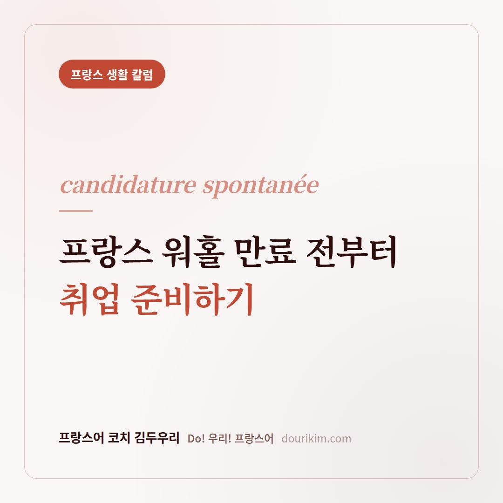
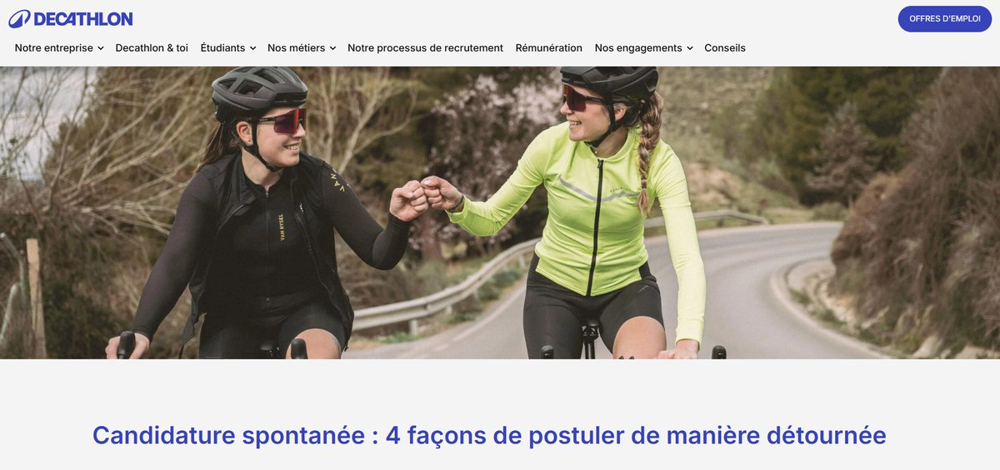
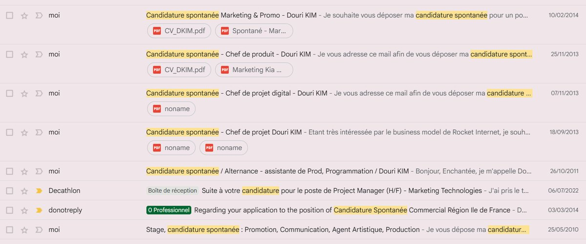
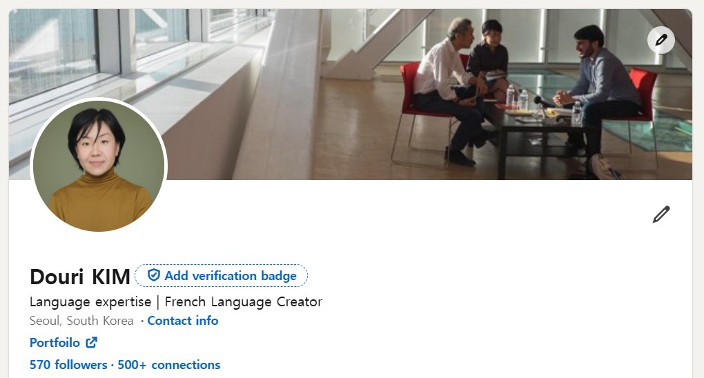
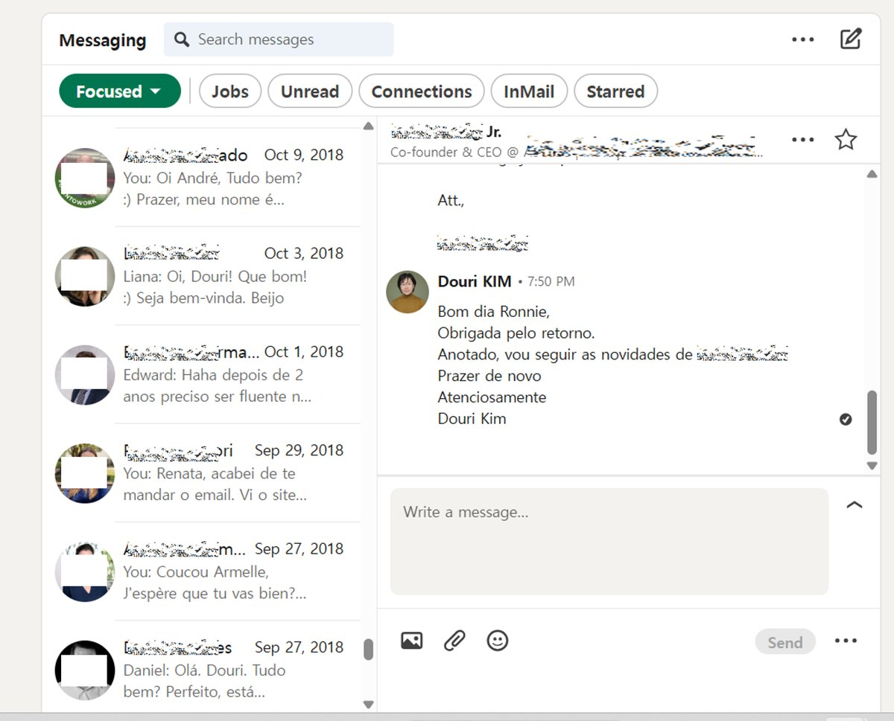
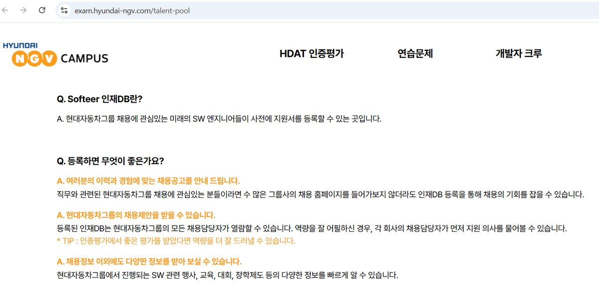
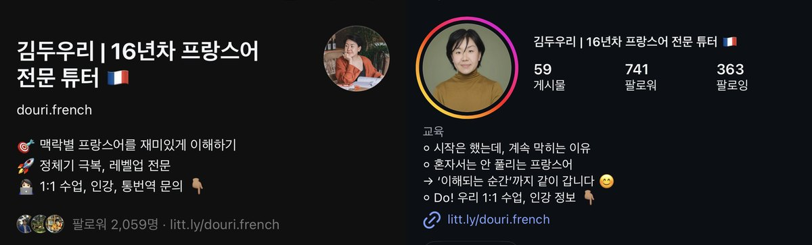

🥖 프랑스 생활
프랑스 워홀 취업 준비,
졸업 전부터 시작됩니다
한국에선 상상하기 힘든, 공고 없는 자리에 지원서 보내기.
효과 있냐구요?
외국인이었던 제가 제대로 효과 봤습니다!

프랑스에는 candidature spontanée, 우리말로 자발적 지원서라는 문화가 있습니다. 채용 공고가 없는 회사에 먼저 지원서를 보내는 방식이에요. 프랑스 워홀이 끝나갈 때 쓸 수 있는 가장 현실적인 카드이기도 합니다.
먼저 읽는 요약
프랑스에는 채용 공고가 없는 회사에 먼저 지원서를 보내는 candidature spontanée (자발적 지원서) 문화가 있습니다. 프랑스 워홀이 끝나갈 때 쓸 수 있는 가장 현실적인 방법이에요.
- 자발적 지원서가 무엇인지
- 프랑스에서 왜 이게 자연스러운지
- 한국인이라는 점을 어떻게 강점으로 쓰는지
- 제가 실제로 먼저 연락해서 얻어낸 결과들
- 오늘 바로 연습해볼 수 있는 것
소셜 미디어에서 이제 프랑스에서 일자리 구하는 과정을 블로그 형식으로 담거나, 면접에 대한 구체적인 질문을 자주 접할 수 있어요. 대학교에서 학위 수료 후 곧바로 귀국하지 않거나, 프랑스 워홀(워킹 홀리데이) 혹은 어학 연수로 와 단기로 있다가 취업까지 고려하시는 분들이 점점 더 많아지는 추이인 것 같아요.
매해 2,000건의 프랑스 워홀 비자가 선착순으로 발급되고 있어요. 하지만 이제 막 프랑스어가 트이고, 문화적으로 더 경험을 쌓고 싶은데, 기간은 끝나 한국으로 돌아가야 하는 시기가 오죠. 그때 많은 사람들이 "이어서 제대로 된 일을 찾아볼까?" 고민합니다.
만약 이 경우라면 이 글을 집중해서 봐주세요! 어쩌면 프랑스이기 때문에 존재하는 candidature spontanée에 대해 알려드릴게요! 불어를 알지 못해도 영어와 유사하여 가늠은 하셨을 거예요. "자발적인 지원서? 근데 지원서는 다 자발적이지 않나요?"
1. Candidature spontanée, 자발적 지원서란
자발적 지원서는 기업이 공식적인 채용 공고를 내지 않은 상황에서 구직자가 주도적으로 특정 기업에 지원하는 독특한 구직 방식입니다.
이는 단순히 디폴트 이력서를 보내기보다는, 원하는 기업의 가치와 문화에 대한 깊은 이해를 바탕으로 자신의 열정과 적합성을 증명하는 적극적인 방법입니다. 즉, 현재 특정 상황에 직면한 기업 내에서 왜 내가 이 포지션에 적합하며, 어떠한 직무를 통해 기업에 어떤 식으로 기여할 수 있다를 설득할 수 있어야 합니다.

구글 내 검색을 하거나 링크드인에서는 "자발적 지원서 성공하기", "공략 방법" 등 체계적으로 안내하고 있어요.

2. 프랑스에서 자발적 지원서가 자연스러운 이유
프랑스에서 자발적 지원서가 더 선호되는 현상은 복합적인 사회 문화적 요인에서 비롯됩니다. 중앙집권적이고 관료제적인 교육 및 노동 시장 시스템은 개인의 공식적이고 직접적인 접근을 장려합니다. 채용 중인 일자리가 없더라도, 구직자들은 본인만의 창의적인 방식으로 적극적으로 기회의 문을 두드릴 수 있어요.
또한, 프랑스인들의 강한 개인주의와 능력 중심의 문화는 자발적 지원서를 통해 자신의 열정과 잠재력을 직접 증명하려는 성향을 반영합니다.
한국에 있는 저희도 똑같아요. 링크드인에서 "커넥션 수락 요청"이 와도, 누구이며, 왜 소통하고 싶은지 간단한 몇 문장이라도 연결고리를 만들려고 한 노력이 보이면, 관대해지기 마련입니다.

한국인이라는 정체성도 무기가 될 수 있어요.
프랑스 워홀이나 어학연수로 프랑스에 머무르는 한국인이라면 한 가지 더 기억해두면 좋은 게 있어요. 프랑스인과는 다른 한국인만의 강점을 부각하고, 한국인으로서 회사에 어떻게 기여할 수 있는지를 표현하는 것이 중요하다는 점이에요.
또한 링크드인과 같은 대표적인 글로벌 플랫폼에서 주기적인 이력 업데이트, 본인의 생각, 프로젝트 여정을 적극적으로 공유하세요!
3. 먼저 연락해서 실제로 얻어낸 것들
제가 먼저 요청드려 얻어낸 결과들을 알려드릴게요.
- 한국에서 고등학교 때 재미있게 본 다큐의 음악이 마음에 들어 소장하고 싶은 마음이 들었어요. 인터넷으로 찾은 담당 피디님께 메일을 보냈고, 피디님은 음악을 씨디로 구워서 집으로 보내주셨었어요.
- 프랑스 통신사의 음원 서비스 팀장분에게 인턴 자리를 위해 메일을 보냅니다. 이 팀장님은 인사팀으로 메일을 전달했습니다. 결론은 시간적으로 맞지 않아 정확히 일 년 후에 필요한 모든 채용 절차를 거쳐 입사했습니다.
- 프랑스에서 "디지털화로 인한 영화 유통사와 상영관에 끼치는 영향"이라는 주제로 논문을 발표했습니다. 저는 전문가의 의견이 필요했고, 평소에 즐겨보던 영화들을 유통하는 Wild Bunch에 문의를 해보았고, 몇 번의 티키타카 끝에 전화 인터뷰를 얻어냈어요.
- 글로벌 커리어의 경력을 위해 브라질에 가서도 저는 프랑스식의 방법으로 끊임없이 링크드인으로 저를 노출시키며 어필했습니다.

저의 예시들 보셨죠? 화려한 이력이 없었을 때도, 지극히 개인적인 부탁이어도, 진심이 있었기에 메세지가 통했습니다. 프랑스 워홀이라고 도전해보지 않을 이유도 없고, 이 지원서를 받는다고 홀대할 대표님도 없습니다.
4. 프랑스 워홀 중에 오늘부터 해볼 것
소셜 미디어, 비즈니스 플랫폼이 없던 시절, 저는 각 개인의 이메일 주소를 알아내려고 엄청난 서치를 했습니다. 어떻게 보면 스토커처럼 집요하게 기업의 주소 구성 패턴을 알아냈습니다.
지금은 얼굴이 알려진 사람이 아니더라도 본인의 이름으로 소통하는 시대잖아요. 클릭 한 번이면 이메일 주소를 모르더라도, 자신을 어필할 수 있습니다!
프랑스 워홀 중에도 연습할 겸, 아주 사소한 것으로라도 테스트를 해보세요. 예를 들어, 평소에 좋아하던 커피샵의 바리스타, 가게의 이벤트 기획, 옆집 이웃에게 강아지 산책 제안 등, 전화 한 통, 방문, 메세지 다양한 수단으로 본인의 열정과 동기를 전달해보세요!

프랑스 워홀이나 유학을 졸업 이후의 취업까지 염두에 두고 계신다면, 공고가 뜨기를 기다리기보다 먼저 두드려보는 것. 그게 어쩌면 가장 프랑스스러운 시작일지도 몰라요!

김두우리, 16년차 프랑스어 FLE 전문 코치
한국 학생들이 어디서 막히는지 아는 사람이 씁니다. 1:1 맞춤 수업과 한불 통번역을 합니다.이력 보기
관련 칼럼